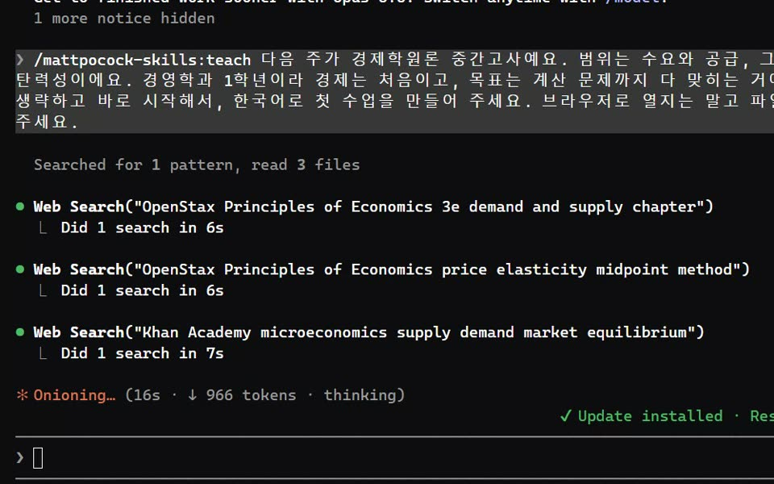

Claude Code에 teach 스킬을 깔고 시험 범위와 목표만 말하면, 클로드가 믿을 만한 교재부터 찾아서 퀴즈·계산 연습이 들어간 수업 페이지를 만들어 줘요. 공부한 기록을 폴더에 남겨서, 다음 날 다시 부르면 틀린 부분부터 이어서 가르쳐요.
터미널(명령 프롬프트)에 아래 '설치' 두 줄을 차례로 넣으세요. Claude Code 안에서 하려면 앞에 claude를 빼고 /plugin marketplace add …, /plugin install … 로 쳐도 돼요. teach는 Matt Pocock이 공개한 스킬 모음(MIT)에 들어 있어요.
바탕화면 같은 곳에 '경제학원론'처럼 과목 이름으로 빈 폴더를 만들고, 그 폴더에서 Claude Code를 실행하세요. 수업 파일과 공부 기록이 전부 이 폴더에 쌓여요. 다른 작업 폴더에서 하지 마세요.
아래 '첫 수업 요청' 문장에서 과목·범위·수준·목표만 바꿔 넣으세요. 목표를 말하지 않으면 클로드가 왜 배우는지부터 질문해요(그것도 괜찮아요). 첫 수업은 자료를 찾느라 몇 분 걸려요. 저희는 6분 36초 걸렸어요.

폴더의 lessons 안 HTML 파일을 더블클릭하면 브라우저로 열려요. 슬라이더를 움직이는 그래프, 바로 채점되는 퀴즈, 무작위로 바뀌는 계산 연습이 들어 있어요. 용어집·공식 시트는 reference 폴더에 따로 생겨요.
같은 폴더에서 Claude Code를 다시 켜고, 몇 개 맞혔는지와 헷갈린 곳을 말한 뒤 '다음 수업'을 요청하세요. 클로드가 학습 기록을 남기고, 다음 수업을 그 약점부터 시작해요. 대화가 끊겨도 폴더의 기록을 읽어서 이어 가요.
터미널에 — 스킬 모음 등록
claude plugin marketplace add mattpocock/skills
터미널에 — 스킬 설치
claude plugin install mattpocock-skills@mattpocock
과목 폴더에서 Claude Code를 켜고 (괄호 안만 바꾸기)
/teach 다음 주가 (경제학원론) 중간고사예요. 범위는 (수요와 공급, 탄력성)이에요. (경제는 처음)이고, 목표는 (계산 문제까지 다 맞히는 거)예요. 한국어로 첫 수업을 만들어 주세요.
수업을 풀고 나서
/teach 수업 (1) 풀었어요. 확인 문제는 (4)개 중 (3)개 맞았고, (4번)이 헷갈렸어요. 다음 수업 만들어 주세요.
시험 스타일에 맞추고 싶을 때
/teach 교재는 (맨큐 경제학원론)이고, 이 폴더에 넣은 기출문제 스타일에 맞춰서 다음 수업이랑 연습 문제를 만들어 주세요.
도움이 되셨다면
@ai.antenna.kr
에서 바로 쓰는 AI 활용법을 계속 올립니다.